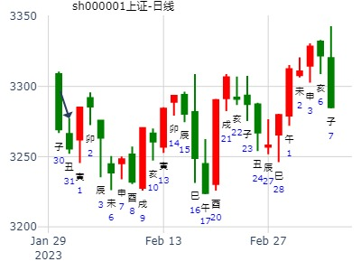
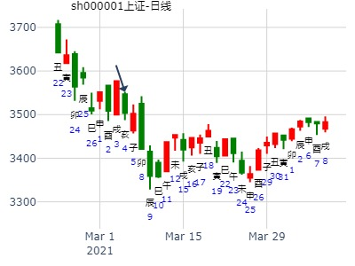

主帖标题: 个股研究交流专贴
麦站看看601100恒立油缸近期涨男
占事：601100恒立油缸近期涨跌
公历起卦时间：2016年1月21日18时8分 (电脑自动)
干支：乙未年 己丑月 壬寅日 己酉时 （日空：辰巳）
兑宫：泽地萃 兑宫：泽地萃
六神 伏神 本 卦 变 卦
白虎 父母丁未土 ▅▅ ▅▅ 父母丁未土 ▅▅ ▅▅
腾蛇 兄弟丁酉金 ▅▅▅▅▅ 应 兄弟丁酉金 ▅▅▅▅▅ 应
勾陈 子孙丁亥水 ▅▅▅▅▅ 子孙丁亥水 ▅▅▅▅▅
朱雀 妻财乙卯木 ▅▅ ▅▅ 妻财乙卯木 ▅▅ ▅▅
青龙 官鬼乙巳火 ▅▅ ▅▅ 世 官鬼乙巳火 ▅▅ ▅▅ 世
玄武 父母乙未土 ▅▅ ▅▅ 父母乙未土 ▅▅ ▅▅
主帖标题: 399006 寅月
公历起卦时间：2023年1月29日16时37分 (在线摇卦)
干支：壬寅年 癸丑月 丁亥日 戊申时 （日空：午未）
兑宫：泽地萃 兑宫：泽地萃
六神 伏神 本 卦 变 卦
青龙 父母丁未土 ▅▅ ▅▅ 父母丁未土 ▅▅ ▅▅
玄武 兄弟丁酉金 ▅▅▅▅▅ 应 兄弟丁酉金 ▅▅▅▅▅ 应
白虎 子孙丁亥水 ▅▅▅▅▅ 子孙丁亥水 ▅▅▅▅▅
螣蛇 妻财乙卯木 ▅▅ ▅▅ 妻财乙卯木 ▅▅ ▅▅
勾陈 官鬼乙巳火 ▅▅ ▅▅ 世 官鬼乙巳火 ▅▅ ▅▅ 世
朱雀 父母乙未土 ▅▅ ▅▅ 父母乙未土 ▅▅ ▅▅
主帖标题: 测丑日沪市大盘
公历起卦时间：2023年1月31日9时48分 (在线摇卦)
干支：壬寅年 癸丑月 己丑日 己巳时 （日空：午未）
兑宫：泽地萃
六神 伏神 本 卦
勾陈 父母丁未土 ▅▅ ▅▅
朱雀 兄弟丁酉金 ▅▅▅▅▅ 应
青龙 子孙丁亥水 ▅▅▅▅▅
玄武 妻财乙卯木 ▅▅ ▅▅
白虎 官鬼乙巳火 ▅▅ ▅▅ 世
螣蛇 父母乙未土 ▅▅ ▅▅
实际当日跌0.42%，预测正确。

主帖标题: 问600722 2011年全年走势大家来探讨一下·
求测人：某人，男，庚申(1980年)，手工指定(起卦方式)
占问事宜：要问的事情
公历：2011年2月3日2时42分，星期四。
神煞：驿马-亥 桃花-午 干禄-午 贵人-子、申
干支：庚寅年 己丑月 己丑日 乙丑时 (卦身：未)
主变卦 泽地萃(兑宫) [空亡:午、未]
勾陈 ▅▅ ▅▅ 父母丁未土
朱雀 ▅▅▅▅▅ 兄弟丁酉金 应
青龙 ▅▅▅▅▅ 子孙丁亥水
玄武 ▅▅ ▅▅ 妻财乙卯木
白虎 ▅▅ ▅▅ 官鬼乙巳火 世
螣蛇 ▅▅ ▅▅ 父母乙未土
主帖标题: 2月6-10日大盘涨跌卦
占事：2月6-10日大盘涨跌？
公历起卦时间：2012年2月3日16时7分 (手工指定)
干支：辛卯年 辛丑月 甲午日 壬申时 （日空：辰巳）
兑宫：泽地萃 兑宫：泽地萃
六神 伏神 本 卦 变 卦
玄武 父母丁未土 ▅▅ ▅▅ 父母丁未土 ▅▅ ▅▅
白虎 兄弟丁酉金 ▅▅▅▅▅ 应 兄弟丁酉金 ▅▅▅▅▅ 应
腾蛇 子孙丁亥水 ▅▅▅▅▅ 子孙丁亥水 ▅▅▅▅▅
勾陈 妻财乙卯木 ▅▅ ▅▅ 妻财乙卯木 ▅▅ ▅▅
朱雀 官鬼乙巳火 ▅▅ ▅▅ 世 官鬼乙巳火 ▅▅ ▅▅ 世
青龙 父母乙未土 ▅▅ ▅▅ 父母乙未土 ▅▅ ▅▅
主帖标题: 这个是涨停卦吗
男 占事：600610中毅达明天和后天涨跌
公历起卦时间：2016年2月17日16时25分 (电脑自动)
干支：丙申年 庚寅月 己巳日 壬申时 （日空：戌亥）
兑宫：泽地萃 兑宫：泽地萃
六神 伏神 本 卦 变 卦
勾陈 父母丁未土 ▅▅ ▅▅ 父母丁未土 ▅▅ ▅▅
朱雀 兄弟丁酉金 ▅▅▅▅▅ 应 兄弟丁酉金 ▅▅▅▅▅ 应
青龙 子孙丁亥水 ▅▅▅▅▅ 子孙丁亥水 ▅▅▅▅▅
玄武 妻财乙卯木 ▅▅ ▅▅ 妻财乙卯木 ▅▅ ▅▅
白虎 官鬼乙巳火 ▅▅ ▅▅ 世 官鬼乙巳火 ▅▅ ▅▅ 世
腾蛇 父母乙未土 ▅▅ ▅▅ 父母乙未土 ▅▅ ▅▅
招财进宝提供 七星电子
我今天在27。75元买入七星电子拿到3月底卖出能赚钱吗？
时间: 2017-02-23 8时24分
干支: 丁酉年壬寅月辛巳日 (旬空: 申酉 )
萃静卦
腾蛇 ▅▅ ▅▅ 父母未土
勾陈 ▅▅▅▅▅ 兄弟酉金 应
朱雀 ▅▅▅▅▅ 子孙亥水
青龙 ▅▅ ▅▅ 妻财卯木
玄武 ▅▅ ▅▅ 官鬼巳火 世
白虎 ▅▅ ▅▅ 父母未土
主帖标题: 六爻试测上证2020.2.17庚寅星期一-2.21哪日是顶？
男 占事：六爻试测上证2020.2.17庚寅星期一-2.21日顶？
公历起卦时间：2020年2月15日15时46分 (电脑自动)
干支：庚子年 戊寅月 戊子日 庚申时 （日空：午未）
兑宫：泽地萃 兑宫：泽地萃
六神 伏神 本 卦 变 卦
朱雀 父母丁未土 ▅▅ ▅▅ 父母丁未土 ▅▅ ▅▅
青龙 兄弟丁酉金 ▅▅▅▅▅ 应 兄弟丁酉金 ▅▅▅▅▅ 应
玄武 子孙丁亥水 ▅▅▅▅▅ 子孙丁亥水 ▅▅▅▅▅
白虎 妻财乙卯木 ▅▅ ▅▅ 妻财乙卯木 ▅▅ ▅▅
螣蛇 官鬼乙巳火 ▅▅ ▅▅ 世 官鬼乙巳火 ▅▅ ▅▅ 世
勾陈 父母乙未土 ▅▅ ▅▅ 父母乙未土 ▅▅ ▅▅
主帖标题: 沪深股市行情走势预测专贴（12月24日-1月4日）
出生年：年 性别：男 占事：沪深大盘（300）到4月4日走势
起卦方式：手工指定 www.iqing.net 线上排盘系统
公历时间：2007年3月21日9时45分 星期三
干支：丁亥年 癸卯月 甲寅日 己巳时 (旬空：子丑)
萃静卦
玄武 ▅▅ ▅▅ 父母未土
白虎 ▅▅▅▅▅ 兄弟酉金 应
腾蛇 ▅▅▅▅▅ 子孙亥水
勾陈 ▅▅ ▅▅ 妻财卯木
朱雀 ▅▅ ▅▅ 官鬼巳火 世
青龙 ▅▅ ▅▅ 父母未土
男 占事：002167东方锆业下午跟明天涨跌
公历起卦时间：2016年3月9日12时16分 (电脑自动)
干支：丙申年 辛卯月 庚寅日 壬午时 （日空：午未）
兑宫：泽地萃 兑宫：泽地萃
六神 伏神 本 卦 变 卦
腾蛇 父母丁未土 ▅▅ ▅▅ 父母丁未土 ▅▅ ▅▅
勾陈 兄弟丁酉金 ▅▅▅▅▅ 应 兄弟丁酉金 ▅▅▅▅▅ 应
朱雀 子孙丁亥水 ▅▅▅▅▅ 子孙丁亥水 ▅▅▅▅▅
青龙 妻财乙卯木 ▅▅ ▅▅ 妻财乙卯木 ▅▅ ▅▅
玄武 官鬼乙巳火 ▅▅ ▅▅ 世 官鬼乙巳火 ▅▅ ▅▅ 世
白虎 父母乙未土 ▅▅ ▅▅ 父母乙未土 ▅▅ ▅▅
主帖标题: 捍卫老祖宗感通卦尊严：测2020.3.16上证收盘走势？2赛01
测2020.3.16上证收盘十位数jnm2yn
男 占事：没填
公历起卦时间：2020年3月16日12时41分 (电脑自动)
干支：庚子年 己卯月 戊午日 戊午时 （日空：子丑）
兑宫：泽地萃 兑宫：泽地萃
六神 伏神 本 卦 变 卦
朱雀 父母丁未土 ▅▅ ▅▅ 父母丁未土 ▅▅ ▅▅
青龙 兄弟丁酉金 ▅▅▅▅▅ 应 兄弟丁酉金 ▅▅▅▅▅ 应
玄武 子孙丁亥水 ▅▅▅▅▅ 子孙丁亥水 ▅▅▅▅▅
白虎 妻财乙卯木 ▅▅ ▅▅ 妻财乙卯木 ▅▅ ▅▅
螣蛇 官鬼乙巳火 ▅▅ ▅▅ 世 官鬼乙巳火 ▅▅ ▅▅ 世
勾陈 父母乙未土 ▅▅ ▅▅ 父母乙未土 ▅▅ ▅▅

主帖标题: 试测上证3.5收盘走势？
男 占事：没填
公历起卦时间：2021年3月4日16时36分 (电脑自动)
干支：辛丑年 庚寅月 辛亥日 丙申时 （日空：寅卯）
兑宫：泽地萃 兑宫：泽地萃
六神 伏神 本 卦 变 卦
螣蛇 父母丁未土 ▅▅ ▅▅ 父母丁未土 ▅▅ ▅▅
勾陈 兄弟丁酉金 ▅▅▅▅▅ 应 兄弟丁酉金 ▅▅▅▅▅ 应
朱雀 子孙丁亥水 ▅▅▅▅▅ 子孙丁亥水 ▅▅▅▅▅
青龙 妻财乙卯木 ▅▅ ▅▅ 妻财乙卯木 ▅▅ ▅▅
玄武 官鬼乙巳火 ▅▅ ▅▅ 世 官鬼乙巳火 ▅▅ ▅▅ 世
白虎 父母乙未土 ▅▅ ▅▅ 父母乙未土 ▅▅ ▅▅

主帖标题: 转发“个股卦例及反馈”
占事：中顺洁柔
公历起卦时间：2021年3月14日9时27分 (电脑自动)
干支：辛丑年 辛卯月 辛酉日 癸巳时 （日空：子丑）
兑宫：泽地萃 兑宫：泽地萃
六神 伏神 本 卦 变 卦
螣蛇 父母丁未土 ▅▅ ▅▅ 父母丁未土 ▅▅ ▅▅
勾陈 兄弟丁酉金 ▅▅▅▅▅ 应 兄弟丁酉金 ▅▅▅▅▅ 应
朱雀 子孙丁亥水 ▅▅▅▅▅ 子孙丁亥水 ▅▅▅▅▅
青龙 妻财乙卯木 ▅▅ ▅▅ 妻财乙卯木 ▅▅ ▅▅
玄武 官鬼乙巳火 ▅▅ ▅▅ 世 官鬼乙巳火 ▅▅ ▅▅ 世
白虎 父母乙未土 ▅▅ ▅▅ 父母乙未土 ▅▅ ▅▅
萃静卦,满坤科技4月份？金玉堂
时间: 2023-03-31
干支: 癸卯年乙卯月戊子日 (旬空: 午未 )
萃静卦
朱雀 ▅▅ ▅▅ 父母未土
青龙 ▅▅▅▅▅ 兄弟酉金 应
玄武 ▅▅▅▅▅ 子孙亥水
白虎 ▅▅ ▅▅ 妻财卯木
腾蛇 ▅▅ ▅▅ 官鬼巳火 世
勾陈 ▅▅ ▅▅ 父母未土
亨。 王假有庙，利见大人，亨，利贞。 用大牲吉，利有攸往。
主帖标题: [大盘指数] 预测股市大盘未来趋势综合贴！
以下是引用sky999在2008-4-21 21:25:00的发言：
占事：2008.04.23-05.15上证指数走势？
起法：手动摇卦 国际易经网 http://www.iqing.net
公历：2008年4月21日21时18分 星期一 开元财经 六爻排盘系统期货版
干支：戊子年 丙辰月 辛卯日 己亥时 (旬空：午未)
萃静卦
腾蛇 ▅▅ ▅▅ 父母未土
勾陈 ▅▅▅▅▅ 兄弟酉金 应
朱雀 ▅▅▅▅▅ 子孙亥水
青龙 ▅▅ ▅▅ 妻财卯木
玄武 ▅▅ ▅▅ 官鬼巳火 世
白虎 ▅▅ ▅▅ 父母未土
壬辰年三月十七(2012/04/07 21:10:11)
壬辰 甲辰 戊戌 癸亥 (辰巳空)
泽地萃
朱雀 父母未土 ∥
青龙 兄弟酉金 ／ 应
玄武 子孙亥水 ／
白虎 妻财卯木 ∥
腾蛇 官鬼巳火 ∥ 兑
勾陈 父母未土 ∥
南方传媒辰月甲子旬走势
时间: 2016-04-12
干支: 丙申年壬辰月甲子日 (旬空: 戌亥 )
萃静卦
玄武 ▅▅ ▅▅ 父母未土
白虎 ▅▅▅▅▅ 兄弟酉金 应
腾蛇 ▅▅▅▅▅ 子孙亥水
勾陈 ▅▅ ▅▅ 妻财卯木
朱雀 ▅▅ ▅▅ 官鬼巳火 世
青龙 ▅▅ ▅▅ 父母未土
000017深中华A是否会在2017年大涨？
公历起卦时间：2017年5月30日11时19分 (手工指定)
干支：丁酉年 乙巳月 丁巳日 丙午时 （日空：子丑）
兑宫：泽地萃 兑宫：泽地萃
六神 伏神 本 卦 变 卦
青龙 父母丁未土 ▅▅ ▅▅ 父母丁未土 ▅▅ ▅▅
玄武 兄弟丁酉金 ▅▅▅▅▅ 应 兄弟丁酉金 ▅▅▅▅▅ 应
白虎 子孙丁亥水 ▅▅▅▅▅ 子孙丁亥水 ▅▅▅▅▅
腾蛇 妻财乙卯木 ▅▅ ▅▅ 妻财乙卯木 ▅▅ ▅▅
勾陈 官鬼乙巳火 ▅▅ ▅▅ 世 官鬼乙巳火 ▅▅ ▅▅ 世
朱雀 父母乙未土 ▅▅ ▅▅ 父母乙未土 ▅▅ ▅▅
航天长峰5.18辛酉-5.22乙丑的顶？
男 占事：没填
公历起卦时间：2020年5月19日10时1分 (电脑自动)
干支：庚子年 辛巳月 壬戌日 乙巳时 （日空：子丑）
兑宫：泽地萃 兑宫：泽地萃
六神 伏神 本 卦 变 卦
白虎 父母丁未土 ▅▅ ▅▅ 父母丁未土 ▅▅ ▅▅
螣蛇 兄弟丁酉金 ▅▅▅▅▅ 应 兄弟丁酉金 ▅▅▅▅▅ 应
勾陈 子孙丁亥水 ▅▅▅▅▅ 子孙丁亥水 ▅▅▅▅▅
朱雀 妻财乙卯木 ▅▅ ▅▅ 妻财乙卯木 ▅▅ ▅▅
青龙 官鬼乙巳火 ▅▅ ▅▅ 世 官鬼乙巳火 ▅▅ ▅▅ 世
玄武 父母乙未土 ▅▅ ▅▅ 父母乙未土 ▅▅ ▅▅
主帖标题: 欢迎各位老师“对300491进行连续4周”预测
2021年第22周 5月24至5月28日个股300491预测
公历时间：2021年5月23日16时7分
干 支：辛丑年 癸巳月 辛未日 丙申时
旬 空：辰巳 午未 戌亥 辰巳
神 煞：驿马─巳 桃花─子 日禄─酉 贵人─寅，午
兑宫：泽地萃
六神 【本 卦】
螣蛇 ▄▄ ▄▄ 父母丁未土
勾陈 ▄▄▄▄▄ 兄弟丁酉金 应
朱雀 ▄▄▄▄▄ 子孙丁亥水
青龙 ▄▄ ▄▄ 妻财乙卯木
玄武 ▄▄ ▄▄ 官鬼乙巳火 世
白虎 ▄▄ ▄▄ 父母乙未土
占事：上证指数在午未申酉戌亥月的走势
时间：2016年6月7日21点23分 星期二
干支：丙申年 甲午月 庚申日 丁亥时
禄神-申 羊刃-酉 文昌-亥 马星-寅 灾煞-午 贵人-午、寅
午月 庚申日（旬空：子丑）
六神 藏爻 泽地萃 兑宫
腾蛇 ■■ ■■父母未土
勾陈 ■■■■■■兄弟酉金 应
朱雀 ■■■■■■子孙亥水
青龙 父母丑土■■ ■■妻财卯木
玄武 妻财卯木■■ ■■官鬼巳火 世
白虎 官鬼巳火■■ ■■父母未土
湖北广电6.8壬午星期一-6.12丙戌哪日顶zx？
公历起卦时间：2020年6月9日9时37分 (电脑自动)
干支：庚子年 壬午月 癸未日 丁巳时 （日空：申酉）
兑宫：泽地萃 兑宫：泽地萃
六神 伏神 本 卦 变 卦
白虎 父母丁未土 ▅▅ ▅▅ 父母丁未土 ▅▅ ▅▅
螣蛇 兄弟丁酉金 ▅▅▅▅▅ 应 兄弟丁酉金 ▅▅▅▅▅ 应
勾陈 子孙丁亥水 ▅▅▅▅▅ 子孙丁亥水 ▅▅▅▅▅
朱雀 妻财乙卯木 ▅▅ ▅▅ 妻财乙卯木 ▅▅ ▅▅
青龙 官鬼乙巳火 ▅▅ ▅▅ 世 官鬼乙巳火 ▅▅ ▅▅ 世
玄武 父母乙未土 ▅▅ ▅▅ 父母乙未土 ▅▅ ▅▅
主帖标题: 百年建党节期间：上证6.25甲辰五-7.9戊午五哪日顶？
上证6.25甲辰五-7.9戊午五哪日顶？+
公历起卦时间：2021年6月28日9时19分 (电脑自动)
干支：辛丑年 甲午月 丁未日 乙巳时 （日空：寅卯）
兑宫：泽地萃 兑宫：泽地萃
六神 伏神 本 卦 变 卦
青龙 父母丁未土 ▅▅ ▅▅ 父母丁未土 ▅▅ ▅▅
玄武 兄弟丁酉金 ▅▅▅▅▅ 应 兄弟丁酉金 ▅▅▅▅▅ 应
白虎 子孙丁亥水 ▅▅▅▅▅ 子孙丁亥水 ▅▅▅▅▅
螣蛇 妻财乙卯木 ▅▅ ▅▅ 妻财乙卯木 ▅▅ ▅▅
勾陈 官鬼乙巳火 ▅▅ ▅▅ 世 官鬼乙巳火 ▅▅ ▅▅ 世
朱雀 父母乙未土 ▅▅ ▅▅ 父母乙未土 ▅▅ ▅▅
上证6.6庚寅星期一收盘走势？
男 占事：没填
公历起卦时间：2022年6月5日14时30分 (电脑自动)
干支：壬寅年 乙巳月 己丑日 辛未时 （日空：午未）
兑宫：泽地萃 兑宫：泽地萃
六神 伏神 本 卦 变 卦
勾陈 父母丁未土 ▅▅ ▅▅ 父母丁未土 ▅▅ ▅▅
朱雀 兄弟丁酉金 ▅▅▅▅▅ 应 兄弟丁酉金 ▅▅▅▅▅ 应
青龙 子孙丁亥水 ▅▅▅▅▅ 子孙丁亥水 ▅▅▅▅▅
玄武 妻财乙卯木 ▅▅ ▅▅ 妻财乙卯木 ▅▅ ▅▅
白虎 官鬼乙巳火 ▅▅ ▅▅ 世 官鬼乙巳火 ▅▅ ▅▅ 世
螣蛇 父母乙未土 ▅▅ ▅▅ 父母乙未土 ▅▅ ▅▅
男 占事：600231凌钢股份下周涨跌
公历起卦时间：2016年7月8日15时46分 (电脑自动)
干支：丙申年 乙未月 辛卯日 丙申时 （日空：午未）
兑宫：泽地萃 兑宫：泽地萃
六神 伏神 本 卦 变 卦
腾蛇 父母丁未土 ▅▅ ▅▅ 父母丁未土 ▅▅ ▅▅
勾陈 兄弟丁酉金 ▅▅▅▅▅ 应 兄弟丁酉金 ▅▅▅▅▅ 应
朱雀 子孙丁亥水 ▅▅▅▅▅ 子孙丁亥水 ▅▅▅▅▅
青龙 妻财乙卯木 ▅▅ ▅▅ 妻财乙卯木 ▅▅ ▅▅
玄武 官鬼乙巳火 ▅▅ ▅▅ 世 官鬼乙巳火 ▅▅ ▅▅ 世
白虎 父母乙未土 ▅▅ ▅▅ 父母乙未土 ▅▅ ▅▅
主帖标题: 2016第22局股市预测大赛
占事：下周上证指数每日行情？ 男 起卦方式：电脑自动
起卦时间：2016年07月10日14时41分
干支：丙申年乙未月癸巳日己未时 旬空：辰巳 辰巳（午未）子丑
萃静卦
白虎 ▅▅ ▅▅ 父母未土
腾蛇 ▅▅▅▅▅ 兄弟酉金 应
勾陈 ▅▅▅▅▅ 子孙亥水
朱雀 ▅▅ ▅▅ 妻财卯木
青龙 ▅▅ ▅▅ 官鬼巳火 世
玄武 ▅▅ ▅▅ 父母未土
主帖标题: 欢迎各位老师“对300491进行连续4周”预测
下周卦如下
公历时间：2021年7月2日16时6分 农历时间：辛丑年 五月二十三日申时
干 支：辛丑年 甲午月 辛亥日 丙申时
旬 空：辰巳 辰巳 寅卯 辰巳
神 煞：驿马─巳 桃花─子 日禄─酉 贵人─寅，午
兑宫：泽地萃
六神 【本 卦】
螣蛇 ▄▄ ▄▄ 父母丁未土
勾陈 ▄▄▄▄▄ 兄弟丁酉金 应
朱雀 ▄▄▄▄▄ 子孙丁亥水
青龙 ▄▄ ▄▄ 妻财乙卯木
玄武 ▄▄ ▄▄ 官鬼乙巳火 世
白虎 ▄▄ ▄▄ 父母乙未土
主帖标题: 探索：邀测2021.7.16上证指数收盘个位是几？
测2021.7.16上证指数收盘个位是几？
公历起卦时间：2021年7月16日9时15分 (电脑自动)
干支：辛丑年 乙未月 乙丑日 辛巳时 （日空：戌亥）
兑宫：泽地萃 兑宫：泽地萃
六神 伏神 本 卦 变 卦
玄武 父母丁未土 ▅▅ ▅▅ 父母丁未土 ▅▅ ▅▅
白虎 兄弟丁酉金 ▅▅▅▅▅ 应 兄弟丁酉金 ▅▅▅▅▅ 应
螣蛇 子孙丁亥水 ▅▅▅▅▅ 子孙丁亥水 ▅▅▅▅▅
勾陈 妻财乙卯木 ▅▅ ▅▅ 妻财乙卯木 ▅▅ ▅▅
朱雀 官鬼乙巳火 ▅▅ ▅▅ 世 官鬼乙巳火 ▅▅ ▅▅ 世
青龙 父母乙未土 ▅▅ ▅▅ 父母乙未土 ▅▅ ▅▅
主帖标题: 请易经高手解8月3日大盘涨跌卦!
以下是引用金眼牛在2007-8-2 19:11:00的发言：
占事：8月3日大盘涨跌?
公历时间：2007年8月2日15时11分 星期四
干支：丁亥年 丁未月 戊辰日 庚申时 (旬空：戌亥)
萃静卦
朱雀 ▅▅ ▅▅ 父母未土
青龙 ▅▅▅▅▅ 兄弟酉金 应
玄武 ▅▅▅▅▅ 子孙亥水
白虎 ▅▅ ▅▅ 妻财卯木
腾蛇 ▅▅ ▅▅ 官鬼巳火 世
勾陈 ▅▅ ▅▅ 父母未土

九戒 占事：新兴铸管 815 一周 公历时间：2014年8月14日19时4分
干 支：甲午年 壬申月 丁巳日 庚戌时
旬 空：辰巳 戌亥 (子丑) 寅卯
兑宫：泽地萃
六神 【本 卦】
青龙 ▄▄ ▄▄ 父母丁未土
玄武 ▄▄▄▄▄ 兄弟丁酉金 应
白虎 ▄▄▄▄▄ 子孙丁亥水
螣蛇 ▄▄ ▄▄ 妻财乙卯木
勾陈 ▄▄ ▄▄ 官鬼乙巳火 世
朱雀 ▄▄ ▄▄ 父母乙未土
亥水暗动，在亥日大涨。
时间: 2024-08-06
干支: 甲辰年辛未月壬寅日 (旬空: 辰巳 )
萃静卦
白虎 ▅▅ ▅▅ 父母未土
腾蛇 ▅▅▅▅▅ 兄弟酉金 应
勾陈 ▅▅▅▅▅ 子孙亥水
朱雀 ▅▅ ▅▅ 妻财卯木
青龙 ▅▅ ▅▅ 官鬼巳火 世
玄武 ▅▅ ▅▅ 父母未土
下周上证指数吉凶-在线摇卦
时间: 2024-08-16
干支: 甲辰年壬申月壬子日 (旬空: 寅卯 )
萃静卦
白虎 ▅▅ ▅▅ 父母未土
腾蛇 ▅▅▅▅▅ 兄弟酉金 应
勾陈 ▅▅▅▅▅ 子孙亥水
朱雀 ▅▅ ▅▅ 妻财卯木
青龙 ▅▅ ▅▅ 官鬼巳火 世
玄武 ▅▅ ▅▅ 父母未土
泽地萃静卦，悟道喜悦测今日上证
时间: 2014-09-01
干支: 甲午年壬申月乙亥日 (旬空: 申酉 )
萃静卦
玄武 ▅▅ ▅▅ 父母未土
白虎 ▅▅▅▅▅ 兄弟酉金 应
腾蛇 ▅▅▅▅▅ 子孙亥水
勾陈 ▅▅ ▅▅ 妻财卯木
朱雀 ▅▅ ▅▅ 官鬼巳火 世
青龙 ▅▅ ▅▅ 父母未土
卯长生在亥日，勉强看涨。
男 占事：000017深中华A明天涨跌
公历起卦时间：2014年9月17日17时56分 (电脑自动)
干支：甲午年 癸酉月 辛卯日 丁酉时 （日空：午未）
兑宫：泽地萃 兑宫：泽地萃
六神 伏神 本 卦 变 卦
腾蛇 父母丁未土 ▅▅ ▅▅ 父母丁未土 ▅▅ ▅▅
勾陈 兄弟丁酉金 ▅▅▅▅▅ 应 兄弟丁酉金 ▅▅▅▅▅ 应
朱雀 子孙丁亥水 ▅▅▅▅▅ 子孙丁亥水 ▅▅▅▅▅
青龙 妻财乙卯木 ▅▅ ▅▅ 妻财乙卯木 ▅▅ ▅▅
玄武 官鬼乙巳火 ▅▅ ▅▅ 世 官鬼乙巳火 ▅▅ ▅▅ 世
白虎 父母乙未土 ▅▅ ▅▅ 父母乙未土 ▅▅ ▅▅
泽地萃静卦。1024周卦。301113下周涨跌,
时间: 2022-10-22 9时03分
干支: 壬寅年庚戌月戊申日 (旬空: 寅卯 )
萃静卦
朱雀 ▅▅ ▅▅ 父母未土
青龙 ▅▅▅▅▅ 兄弟酉金 应
玄武 ▅▅▅▅▅ 子孙亥水
白虎 ▅▅ ▅▅ 妻财卯木
腾蛇 ▅▅ ▅▅ 官鬼巳火 世
勾陈 ▅▅ ▅▅ 父母未土
301236软通动力在本周如何-金手工指定
时间: 2024-10-08
干支: 甲辰年甲戌月乙巳日 (旬空: 寅卯 )
萃静卦
玄武 ▅▅ ▅▅ 父母未土
白虎 ▅▅▅▅▅ 兄弟酉金 应
腾蛇 ▅▅▅▅▅ 子孙亥水
勾陈 ▅▅ ▅▅ 妻财卯木
朱雀 ▅▅ ▅▅ 官鬼巳火 世
青龙 ▅▅ ▅▅ 父母未土
主帖标题: 奇门预测12月25日大盘行情
aa18970
发表于 2009-12-24 18:54
兑宫：泽地萃 兑宫：泽地萃
玄武 父母丁未土 ▅▅ ▅▅ 父母丁未土 ▅▅ ▅▅
白虎 兄弟丁酉金 ▅▅▅▅▅ 应 兄弟丁酉金 ▅▅▅▅▅ 应
腾蛇 子孙丁亥水 ▅▅▅▅▅ 子孙丁亥水 ▅▅▅▅▅
勾陈 妻财乙卯木 ▅▅ ▅▅ 妻财乙卯木 ▅▅ ▅▅
朱雀 官鬼乙巳火 ▅▅ ▅▅ 世 官鬼乙巳火 ▅▅ ▅▅ 世
青龙 父母乙未土 ▅▅ ▅▅ 父母乙未土 ▅▅ ▅▅
玄武 父母壬戌土 ▅▅▅▅▅ 父母壬戌土 ▅▅▅▅▅
白虎 兄弟壬申金 ▅▅▅▅▅ 兄弟壬申金 ▅▅▅▅▅
腾蛇 官鬼壬午火 ▅▅▅▅▅ 应 官鬼壬午火 ▅▅▅▅▅ 世
勾陈 兄弟辛酉金 ▅▅▅▅▅ ○→ 官鬼戊午火 ▅▅ ▅▅
朱雀 妻财甲寅木 子孙辛亥水 ▅▅▅▅▅ 父母戊辰土 ▅▅▅▅▅
青龙 父母辛丑土 ▅▅ ▅▅ 世 妻财戊寅木 ▅▅ ▅▅ 应
主帖标题: 002476走势强劲！
公历：2012年12月10日21时48分，星期一。
干支：壬辰年 壬子月 乙巳日 丁亥时 (卦身：未)
主变卦 泽地萃(兑宫) [空亡:寅、卯]
玄武 ▅▅ ▅▅ 父母丁未土
白虎 ▅▅▅▅▅ 兄弟丁酉金 应
螣蛇 ▅▅▅▅▅ 子孙丁亥水
勾陈 ▅▅ ▅▅ 妻财乙卯木
朱雀 ▅▅ ▅▅ 官鬼乙巳火 世
青龙 ▅▅ ▅▅ 父母乙未土
风生水起 占事：603023 未来二周
公历时间：2015年12月2日13时6分
干 支：乙未年 丁亥月 壬子日 丁未时 旬 空：辰巳 午未 寅卯 寅卯
兑宫：泽地萃
白虎 ▄▄ ▄▄ 父母丁未土
螣蛇 ▄▄▄▄▄ 兄弟丁酉金 应
勾陈 ▄▄▄▄▄ 子孙丁亥水
朱雀 ▄▄ ▄▄ 妻财乙卯木
青龙 ▄▄ ▄▄ 官鬼乙巳火 世
玄武 ▄▄ ▄▄ 父母乙未土
此处巳日没冲亥水暗动，而涨？
寅卯旬空，寅日冲个高点，下周申日旬空继续管用，冲了寅，但酉日没冲卯，
真正16-17日寅卯日又大涨。